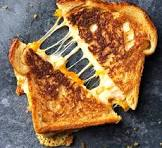

Grilled Cheese

Description
Yes, you do need a recipe for a grilled cheese sandwich. And this is it!
This easy grilled cheese sandwich has a crispy Parmesan crust and a gooey Cheddar and bacon filling, and is
simply the best I've ever had! As far as grilled cheese goes, it doesn't get better.
16 mins total for four sandwiches
Ingredients
- ¼ cup butter, softened
- 1 cup freshly grated Parmigiano-Reggiano cheese
- 8 slices cooked bacon
- 4 slices Cheddar cheese
- 8 slices sourdough bread
Directions
- Mash together butter and Parmesan cheese in a small bowl until evenly blended
- Make sandwiches by placing two slices of bacon and one slice of Cheddar cheese on half of the bread slices.
Top with the remaining slices of bread.
- Heat a large skillet over medium heat. Spread some of the butter mixture on the top of each sandwich. Place
sandwiches butter side down in the skillet. Spread the remaining butter mixture on the other sides. Cook
until golden brown on each side, about 3 minutes per side.
- To serve, cut in half diagonally.